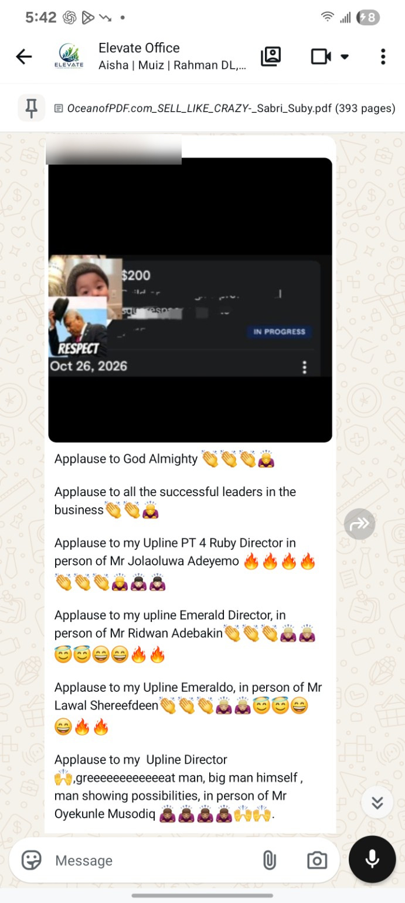
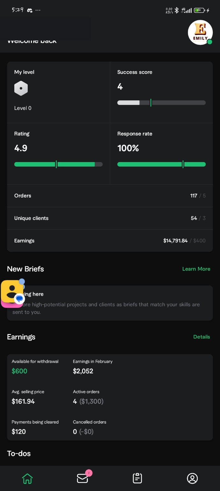
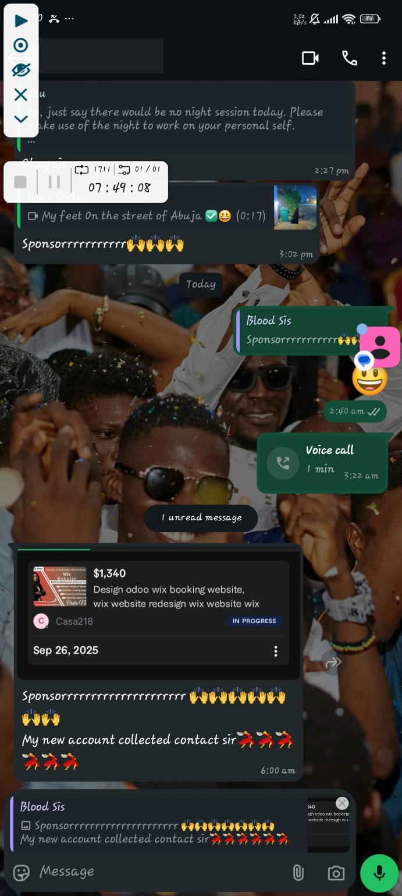
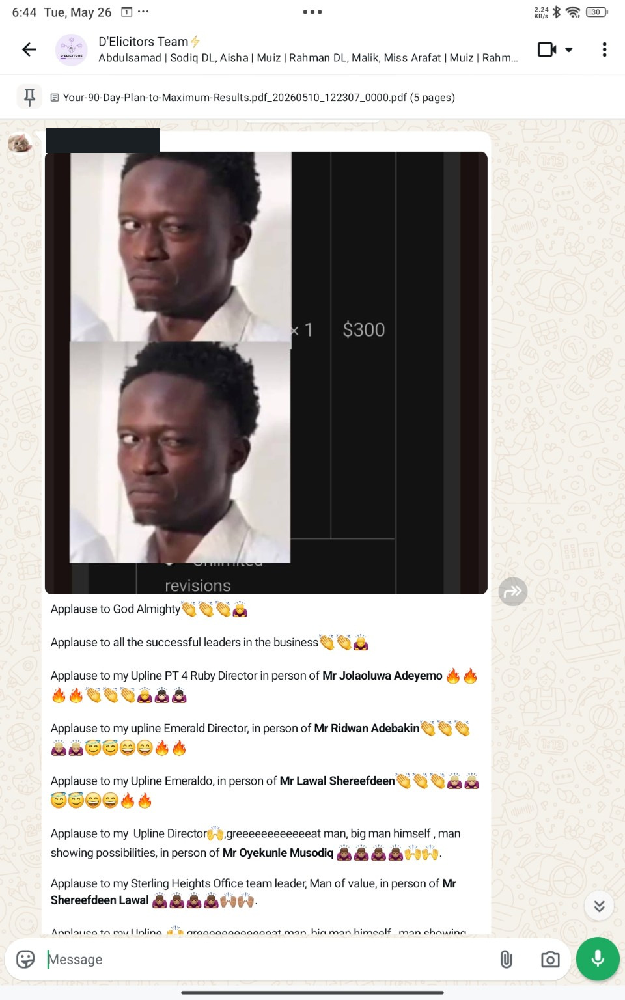
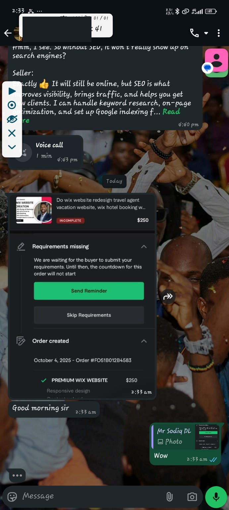
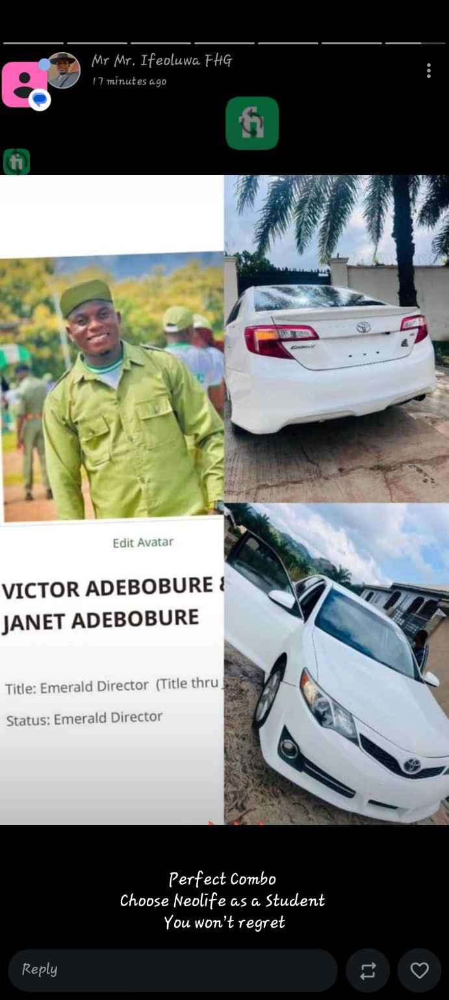

01
Skills Equipped
Learn in-demand digital skills through our free training.
Learn market-ready digital skills for free, use practical tools to get paying clients, and build active income before starting your network marketing journey with our physical team.
Learn in-demand digital skills through our free training.
Access wellness products through our partner company.
Monetize your skills with the right tools, then build your network marketing business.
Create more options around time, travel and family.

Your training starts with a free, market-ready digital skill. Next, learn the tools to package and monetize it, find paying clients and build active income. That comes before beginning the network marketing journey.
Explore the SkillsThe FHG sequence starts with a skill, then the practical tools to monetize it. Use client projects to build your active income first; when you have started earning, you can begin building your network marketing business with physical mentorship.
We use strong market demand to decide where you should start.
You learn, practise and improve until you can solve real client problems.
Learn to use portfolios, freelancing platforms, offers, outreach and client-acquisition tools to turn the skill into earnings.
Once your skill is generating active income, begin the network marketing journey with mentoring and team support at the office.
You do not have to know Olalekan or FHG to get started. If you want to learn website design, graphic design, email marketing or how to begin freelancing, start with a practical skill and a team that can guide you. Free digital skills instruction comes first; earning through clients and any later network marketing involvement are separate steps.
Explore beginner skills, what the free training covers and how to enquire about physical mentorship in your state or city.
Explore free training in Nigeria ↗Understand skills, portfolios, client outreach and delivery before pursuing paid projects.
Read the beginner's guide ↗These are only a small selection. I cannot practically show every result here.







These are only selected examples from the wider FHG community.
See more examples ↗
After reaching Emerald Director, Victor Adebobure celebrated his milestone with a new car. In FHG, this rank recognises a leader capable of helping 20+ people earn monthly.


Five detailed articles for curious beginners across Nigeria—digital skills, freelance clients and how network marketing really works.

Understand real product profit, volume points and why FHG focuses on skills first.
Read the guide ↗
A practical roadmap from choosing a skill to making your first portfolio.
Read the guide ↗
Compare Gigs, profiles, proposals and what clients expect before hiring.
Read the guide ↗No. The FHG’T business itself is physical and office-based. Mentorship, meetings and team building happen at our physical location. The digital skills are what allow you to work with clients online.
You can start from zero. The system is built to teach beginners step by step, starting from the right market-ready skill.
No. A good smartphone and internet connection are enough to begin learning and understanding the system. You can upgrade your tools as you grow.
From what we commonly see, committed beginners often reach their first $200 around the 5-month mark. Some do it in about 2 months, while some take closer to 1 year. Your speed depends on how seriously you learn, practise and apply what you are taught.
No. The digital skills training we offer is free. Come ready to learn, practise and improve; the next step is to practise and work towards your own client projects.
No. First learn a skill and monetize it with the right tools. After you are earning active income, you can start the network marketing journey without relying on selling supplements to create that first income.
Yes. Many people start part-time and fit the physical business activities around school, work and other responsibilities.
A smartphone, a coachable mindset and a strong reason for wanting more. Those three things are enough to begin the conversation.
Freelancing means using a useful digital skill to solve problems for clients, including foreign clients, and getting paid for the work you deliver.
Network marketing means building a product-based business with a partner company, helping other people get started and earning commission as your business organisation grows.
Tell me your preferred area or city, and I will help you find an FHG office close to you.